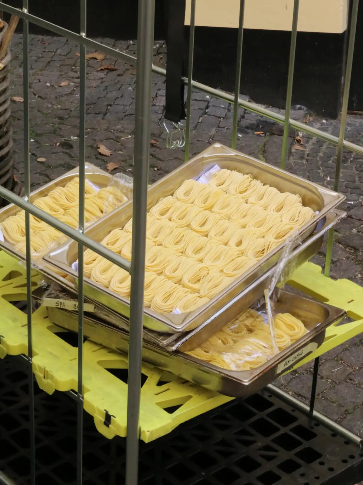
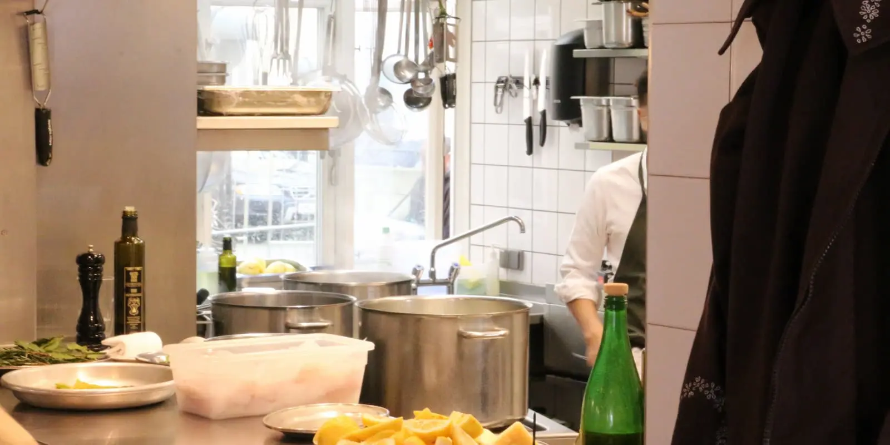
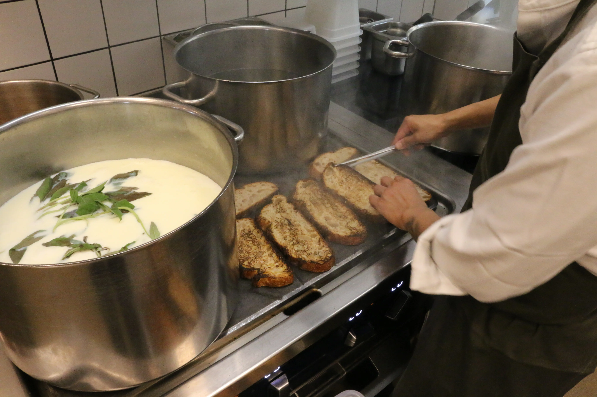
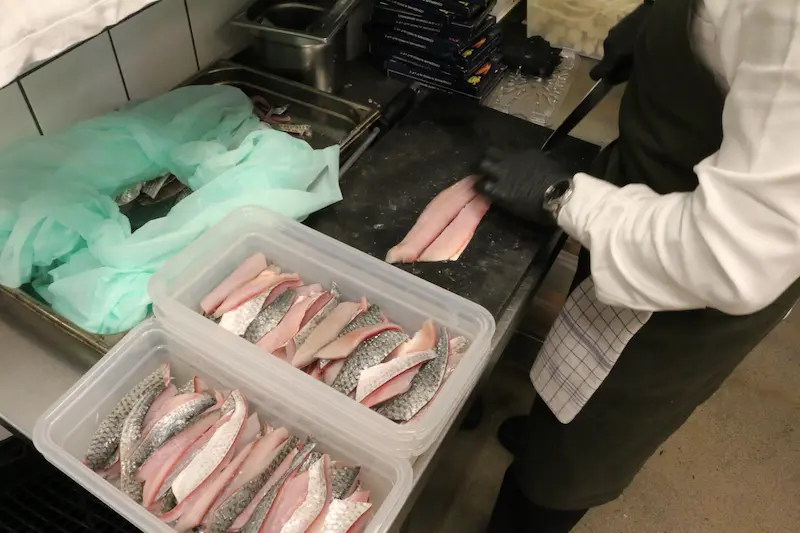

Mikkel Sparwath, kok
En passion for mad & restauration
Til dette lille projekt omkring passion har vi valgt at tale med Mikkel. Mikkel er en ung kok, der blev færdiguddannet i en tidlig alder på Marchal. Han startede på en Michelin-restaurant og har der fået en masse værdifuld erfaring, som har hjulpet ham med at rykke videre i branchen. Han er meget passioneret omkring sit fag og udstråler samtidig en helt fantastisk energi i køkkenet. Alt i alt er han en meget inspirerende person at tale med.
Dagligdag i køkkenet



